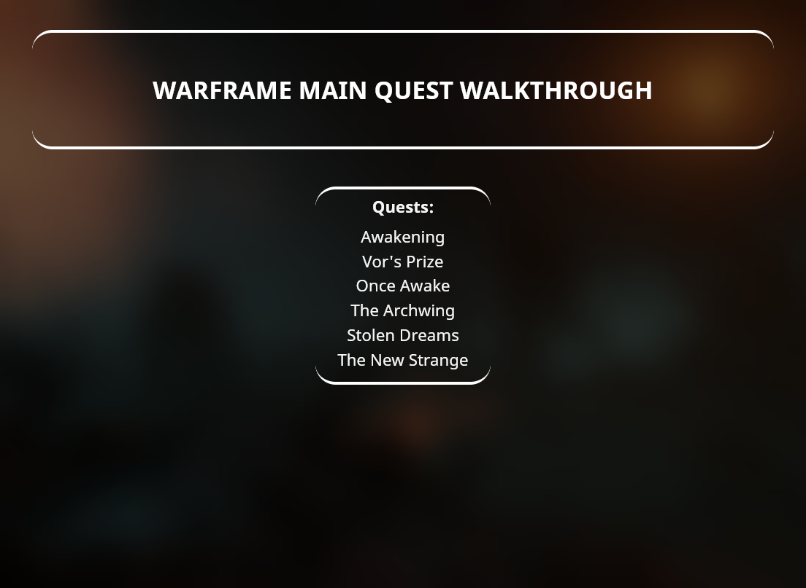
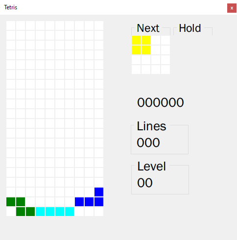
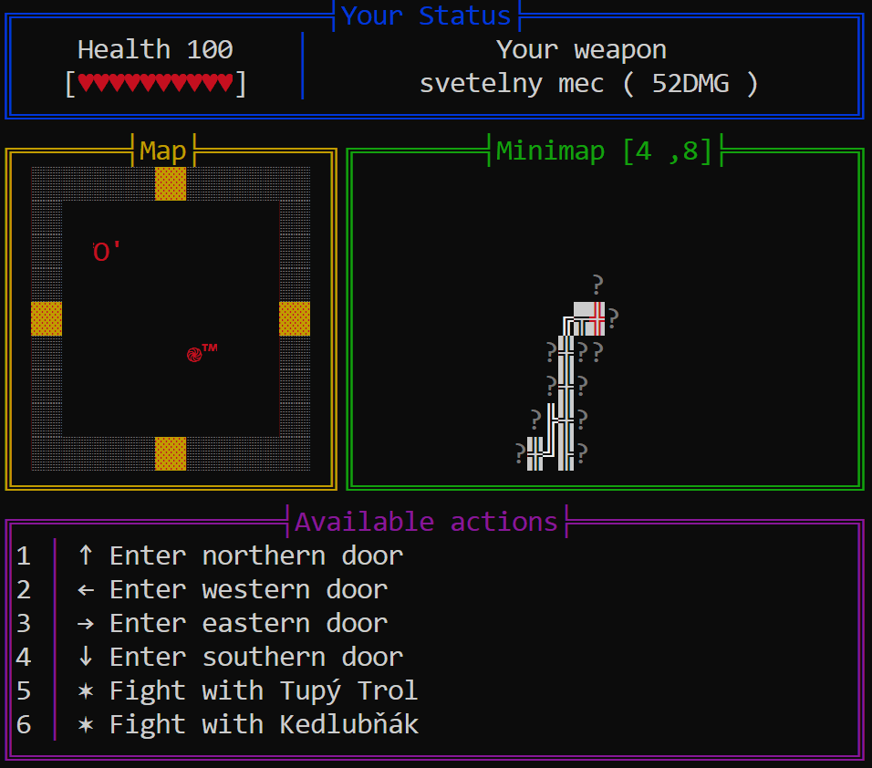
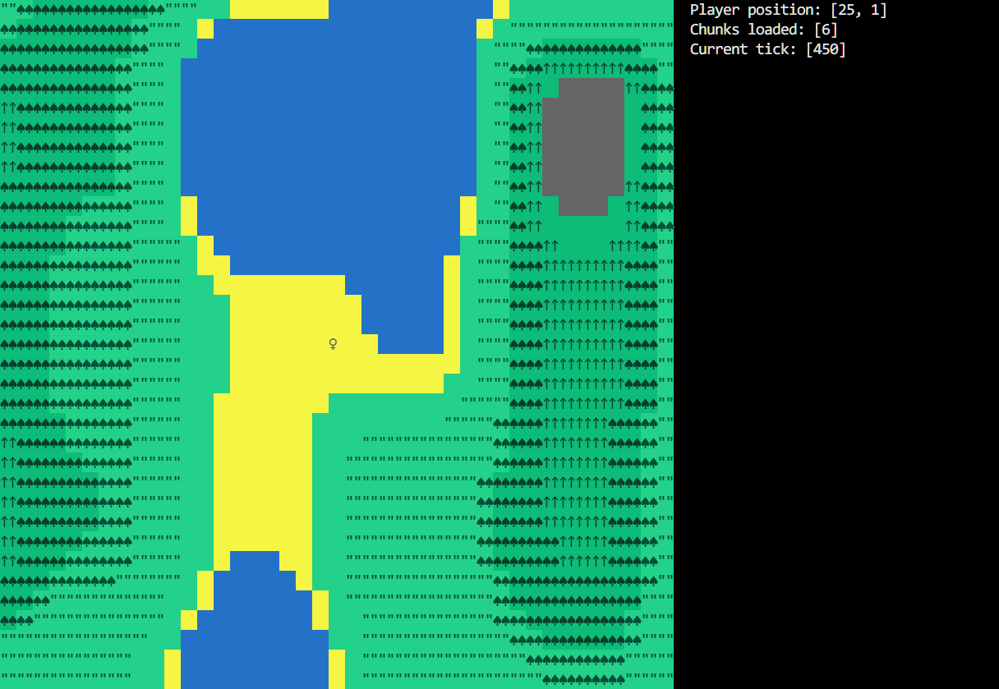
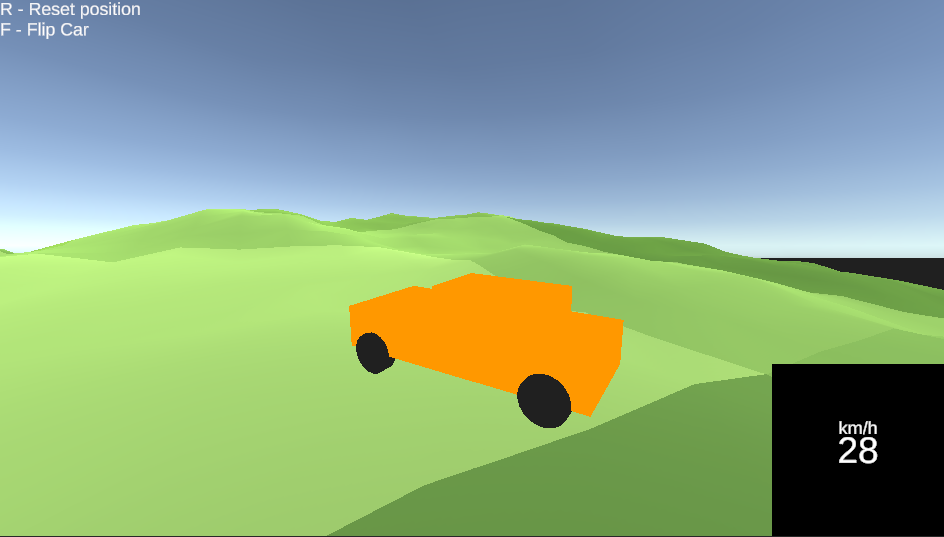

This page serves as a way to show the majority of my experience (primarily in the informational technologies field) with more detailed descriptions than a classic CV. Everything in this document is presented in the most chronological order I could put together.
Please keep in mind that most of the older project were uploaded onto github by me much much later than when they were created because I didn't use github for these one-person small school and personal projects until very recently.
In high school, I gained experience in many parts of the IT field. List of skills I gained experience in:
Very small project I was given after being introduced to the basics of html and css. The theme of a written warframe walkthrough was chosen by me.

During my four years in Vyšší odborná a střední škola Boskovice we had to make several projects for several different subjects. This was one of them. Each student had to choose an app to make in windows forms with a given deadline. My choice was to make Tetris.

During my third year in high school, we were required to write and present a document on any theme related to our field. This was a two-people project and so I teamed up with my close friend and together we documented a basic creation process of a peer to peer connection based game in the Unity engine.
document linkList of skills I gained experience in university (Any items in the list labeled as "basics" mean that I am able to use it and understand basic or even more advanced concepts but I lack the experience in more specific tasks such as usage of certain libraries, best practices, etc... as I've only learned what I was told to):
A part of our OOP course we had to make a C++ game inspired by old dungeon crawlers as a console app. This was a team effort and we used bitbucket to share this project between us. I planned out how we would structure the codebase and how we would approach certain problems as I had the most experience coding using polymorphism. I also made the minimap UI, combat UI and json functionality so my friends could configure the game and add enemies more easily.

As a part of our website development course in Mendelu university, we had to make our own websites using Python. I chose to make an audio streaming website.
A small personal project where I tried to make infinite world generation using a simple noise funtion and chunks.

For the entirety of my time in high school, one of my free time hobbies was the creation of electronic music. If you are interested, I can be found on most platforms by the name "WIAS".
One of my hobbies that consumed a ton of time of my life has been gaming. I consider this to be more a theme for personal talk so I won't get into details here. My steam profile
I don't consider myself as very passionate linux fan but Linux has been my main operating system since the christmas of 2025.
So far I used primarily the Unity engine to learn as much about game development as I possibly can as it is by far my most favorite entertainment medium. One of my code adventures was making a car controller without using the built-in Unity wheel collider components. This lead me into a two week struggle and resulted into me creating my own solution to the missing cyllinder cast method (It wasn't the best solution but it worked quite well).
Car controller Unity project
